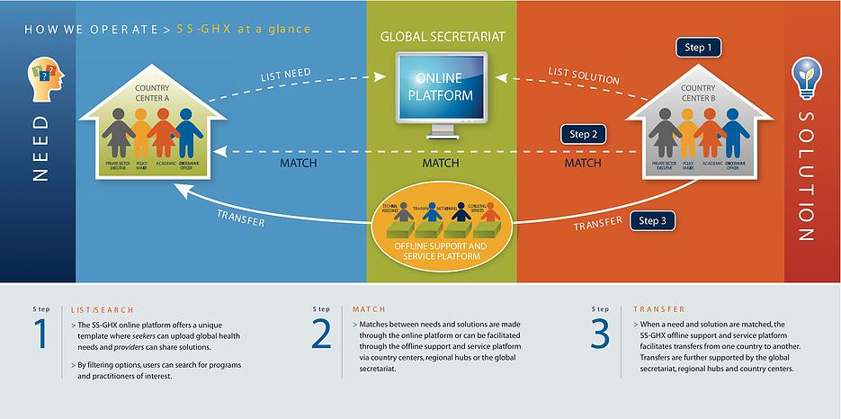

About the South-South Global Health Exchange (SS-GHX)
South-South cooperation has the potential to balance growth and equity on a global scale. The countries of the South are building new models of development cooperation that emphasize mutual benefit and solidarity as well as cost-effectiveness…creating enormous opportunities for sharing of experience, knowledge and good practices that can boost development.
—UN Secretary General Ban Ki-Moon
Who We Are
South-South and Triangular cooperation builds upon knowledge, know-how, and approaches developed and proven useful by countries in the South. In regard to the field of Global Health, building capacity and exchanging knowledge through South-South cooperation can significantly support countries in their efforts to reduce morbidity, mortality and poverty, as well as to accelerate progress toward the Millennium Developmental Goals (MDGs) and the future Sustainable Development Goals (SDGs) to be adopted by the United Nations in September 2015.
The South-South Global Health Exchange (SS-GHX) was established in cooperation with the World Health Organization’s Regional Office of the Americas, the Pan American Health Organization, and other international partners. SS-GHX is an online and in-person platform that facilitates the transfer of appropriate, adaptable, and affordable research, policies, best practices, technology, and financial resources from and to countries in the South. In this light, SS-GHX provides a space where needs and solutions can be exchanged in an transparent and interactive environment.
In response to the international development community’s urgent call for an integrated multi-stakeholder approach to global health issues, we focus on the following areas:
Maternal and Child Health: In response to the UN Secretary-General’s Global Strategy for Women and Children’s Health that calls for an integrated, multi-stakeholder approach to mobilize and intensify global action to improve the health of women and children globally.
Non-communicable Diseases (NCDs): In response to the 2011 UN High-Level Meeting on the Prevention and Control of NCDs which called for an integrated approach to NCD prevention, treatment and mitigation. Our work in this area includes but is not limited to Cardiovascular Diseases, Respiratory Diseases, Diabetes and Cancer.
HIV/AIDS: In response to the urgent need to contribute to the prevention, treatment, care and support for HIV/AIDS.
Furthermore, the SS-GHX platform was endorsed by the Secretary-General’s Global Strategy for Women and Children’s Health as a sustainable business model for replication across the Global South and recommended as a mechanism to disseminate and scale-up global health innovations through technology transfers.
We work actively to:
- Reduce maternal and child morbidity and mortality.
- Improve overall life expectancy.
- Increase healthcare accessibility and acceptability.
- Improve prevention mechanisms.
- Foster health markets.
How We Work

South-South
SS-GHX facilitates Southern countries access to appropriate, adaptable, and affordable research, policies, practices, technology, and financial resources through South-South and Triangular Cooperation.
Transactional
While most donor-supported initiatives focus on presenting information, SS-GHX focuses on making actual transactions by offering both online and off-line beginning-to-end supportive services. This technique allows for facilitative exchanges of technology, assets, services, and financial resources.
Online and Offline Platforms
Transactions and services are supported both online via the SS-GHX website and in physical spaces via the Country Centers located in numerous countries around the world.
Market-driven
SS-GHX welcomes private sector engagement in solving the world’s most challenging health and development issues and allows fair competition in a market-driven environment.
Multi-Stakeholder
SS-GHX endorses a multi-stakeholder approach to South-South cooperation, engaging public and private sectors, academia and civil society, and supporting public-private partnerships to enhance communication, coordination, and collaboration to collectively achieve common goals for improving global health and sustainable development.
Sustainable
SS-GATE is designed to be self-sustaining, with a modest fee structure levied on successful transactions.
Where We Work
SS-GHX is a global platform servicing developing countries across the Global South. We harnesses the power of innovative solutions taking place in emerging economies, middle income countries, least developed countries (LDCs), Land-Locked Developing Countries (LLDCs) and Small Island Developing States (SIDS).
Through its Triangular Cooperation approach, we also works closely with developed countries interested in supporting exchanges of knowledge, technology, and financing among countries in the Global South.
We operate in:
- Africa
- Asia and the Pacific
- Latin America
- Middle East
- Eastern Europe
About the South-South Global Assets and Technology Exchange (SS-GATE)
Launched in 2009, the South-South Global Assets and Technology Exchange (SS-GATE) virtual and physical system is part of the United Nations Office for South-South Cooperation’s (UNOSSC) 3-in-1 support and service delivery architecture for South-South cooperation. It offers a global and sustainable South-South transaction system that aims to provide an enabling environment to facilitate transparent exchanges of working solutions including:
- Applied technologies.
- Know-how.
- Financial resources.
Evidence-based policies among the private sector, public sector and civil society for the inclusive growth of the countries in the South.
Since its inception, numerous United Nations Resolutions have endorsed the SS-GATE programme as a mechanism for technology transfer and South-South Cooperation, such as the 2009 Nairobi Outcome Document, 2011 Istanbul Declaration and Programme of Action, the 2012 endorsement as a sustainable working model by the United Nations Secretary General’s Global Strategy for Women and Children’s Health, 2012 Rio+20 Outcome Document, 2014 SIDS Conference Outcome Document, and the 2014 Vienna Programme of Action for LLDCs.
As set out in the United Nations Secretary-General’s 2008 policy directive, the SS-GATE programme focus areas include: a) Agriculture assets and technology exchange for small and medium-sized enterprises. b) Environment and clean energy exchange focusing on public-private partnerships. c) Global Health exchange to enhance the global health agendas. It actively supports the United Nations Secretary General’s Special initiatives: Zero Hunger, Energy for All, and Every Woman Every Child.
The programme utilizes its broad-based multi-sector networks and a public-private partnership (PPP) approach to further enhance Southern countries capacity to engage in South-South cooperation. SS-GATE’s mechanism consists of: 1) transactional platform: for listing, matching and supporting end-to-end transfers of solutions through a web-platform and on-the-ground presence at the global, regional and country level; and 2) service platform: to further enable the end-to-end transfer of solutions by providing value-added services, including consulting, training, legal advice and access to financing.
About the United Nations Office for South-South Cooperation (UNOSSC)
The United Nations Office for South-South Cooperation (UNOSSC) was established in 1978 by the UN General Assembly with the mandate to promote, coordinate and support South-South and North-South-South (triangular) cooperation globally and within the United Nations system. UNOSSC leverages its global reach and policy and institutional capacities to assist UN agencies and developing countries to strengthen their South-South cooperation capacities. It has designed an innovative 3-in-1 delivery mechanism, endorsed by the UN General Assembly that effectively identifies, shares, and transfers successful Southern-generated development solutions for capacity building and knowledge sharing.
The UN Office for South-South Cooperation:
mainstreams South-South cooperation across the UN system and throughout the international development community by leveraging its global reach as well as its policy and institutional capacities to assist UN agencies and developing countries in strengthening their South-South cooperation capacities. It works to support countries’ efforts to manage, design and implement South-South cooperation policies and initiatives through the identification, sharing and transfer of successful Southern-generated development solutions. It also advocates for support to South-South initiatives, including through its organization of the UN Day for South-South cooperation;
engages a wide range of partners, including Member States, UN entities, multilateral bodies and private-sector and civil society organizations in order to provide the most efficient, effective and comprehensive support for South-South cooperation;
innovates by continually seeking, showcasing and transferring forward-thinking Southern development solutions to development partners to meet the critical development challenges of today;
enables countries of the South – emerging, middle income and least developed – to work together to use their wealth of resources, tangible and intangible, in support of national, regional and global development efforts;
serves as the secretariat to the High-level Committee (HLC) on South-South Cooperation, a subsidiary body of the General Assembly, which provides policy directives and guidance and reviews worldwide progress in South-South cooperation. In this context, it monitors trends in South South cooperation among UN agencies as well as globally, preparing reports for various intergovernmental bodies, including the report of the Secretary-General on the state of South-South cooperation; and
manages the UN Fund for South-South Cooperation and the Pérez-Guerrero Trust Fund for Economic and Technical Cooperation among Developing Countries.